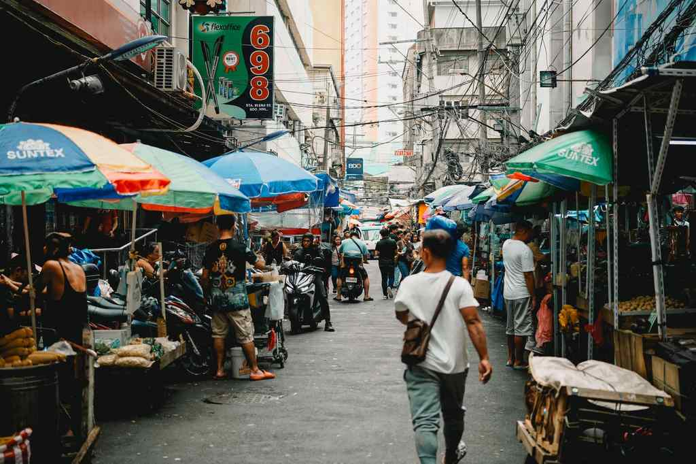

Christmas in Manila starts early and runs loud. By mid-November the Festival of Lights is back at Ayala Triangle Gardens in Makati, Noel Bazaar opens at the World Trade Center in Pasay from November 25 to 30, and from December 15 the city's churches fill for Simbang Gabi, the nine-day run of night and dawn masses that ends on Christmas Eve.
Those three things, the lights, the bazaars and the masses, are what most people mean when they talk about a Manila Christmas. They are also spread across different cities inside Metro Manila, and December traffic punishes anyone who tries to zigzag between them. This guide covers where each one happens, what to expect, and how to fit them into two days without spending half of it in a car.
If you only want the church side of the season, our guide to how the nine dawn masses work explains the tradition and this year's dates in more detail. Here the focus is on Manila itself.

Christmas in Manila at a glance
- Ayala Triangle Festival of Lights: nightly, usually mid-November to early January, free
- Noel Bazaar: World Trade Center, Pasay, November 25 to 30; Filinvest Tent, Alabang, December 17 to 20
- World Bazaar Festival: World Trade Center, usually mid-December until about December 21 or 22
- Simbang Gabi: anticipated masses from the evening of December 15, dawn masses December 16 to 24
- Best base: Makati for the lights, Intramuros and Binondo for the churches
The Lights
Ayala Triangle Gardens, Makati
The Festival of Lights has been the city's main free Christmas show since 2009. The light-and-sound program plays from 6 p.m. to 10 p.m., and because the Triangle is an open lawn under big trees, families bring mats and stay through two or three rounds of it. Last year the display spilled out onto Ayala Avenue, Paseo de Roxas and Makati Avenue, with lanterns shaped after the sarimanok, a sign of good fortune, and the anahaw leaf, a sign of resilience.
Go on a weeknight. Weekends add buskers and a good atmosphere, but also the biggest crowds of the season. From the MRT, get off at Ayala Station and walk over. Food stalls set up around the edges in December, so bring some cash and water. The closing date changes each year, so check Ayala Land's page if you are going in early January.
Bonifacio High Street and Ortigas
BGC is the calmer option. Bonifacio High Street puts up light tunnels, a tall tree and smaller pieces between the shops, and the wide walkways are easier with children or a stroller. You can eat dinner without leaving the lights behind.
Over in Ortigas, the area around Ortigas Park and Greenfield District in Mandaluyong also decorates. Greenfield is the one to pick if you want a weekend night market next to the lights.
Intramuros
The walled city feels nothing like the business districts in December. Warm white lights and parol lanterns line General Luna Street and the area around Plaza San Luis and Fort Santiago, and the walls themselves are lit after dark. Manila Cathedral lights up its front, and San Agustin Church, the oldest stone church in the country and a UNESCO World Heritage Site, decorates in a simpler way that suits it. Arrive near sunset, see Fort Santiago while there is still light, then stay for the churches after 6 p.m. Our Manila in 24 hours guide has a fuller route through the old city.
The Bazaars
Manila's holiday bazaars fill whole exhibition halls, and plenty of people finish their gift list in a single afternoon at one of them. Both of the big ones use the World Trade Center on the Gil Puyat Avenue extension in Pasay, on different dates.
Noel Bazaar
Run by Cut Unlimited for 26 years, Noel Bazaar leans Filipino: local food brands, home linens, kids' clothes, toys and bundles you only find at the bazaar. Its biggest runs have more than 600 shops and food stalls. This season it is at the World Trade Center from November 25 to 30, 11 a.m. to 10 p.m., then at The Filinvest Tent in Alabang, Muntinlupa, from December 17 to 20, 11 a.m. to 9 p.m. There is usually a small entrance fee that goes to partner charities. The halls get warm even with the air conditioning running, so dress light and bring an eco bag. Three hours is enough for most people.
World Bazaar Festival
Billed as the longest-running Christmas bazaar in the country, the World Bazaar Festival takes over the same halls in mid-December, usually until December 21 or 22, from 10 a.m. to 10 p.m. It has more of everything and less of a theme: gadgets, beauty products, general goods and food kiosks from 200-plus brands, plus flash sales and side events. Pick Noel for Filipino products and food gifts, and World Bazaar for range and last-minute buys.
Before you shop
- Leave the carDecember weekends around the World Trade Center are slow. The LRT to Libertad or an early ride-hailing booking saves time.
- Carry some cashMost stalls take GCash and cards now, but small food vendors may not.
- Check the Facebook pagesTicket prices and final dates are posted there and can move by a day.
Simbang Gabi Churches in Manila
Simbang Gabi began in the Spanish period as early masses for farmers who had to be in the fields by daybreak. In Manila today it is crowded, urban and still very devout, and after almost every mass you will find puto bumbong and bibingka sold outside. Schedules are posted by each church in early December, so treat the times below as the usual pattern.
Quiapo Church
The Minor Basilica and National Shrine of Jesus Nazareno at Plaza Miranda draws the biggest crowds. Dawn masses usually run at 4 a.m. and 5 a.m. from December 16 to 24, with anticipated masses at 7 p.m. and 8 p.m. from December 15 to 23. The full hourly list goes up on quiapochurch.com.ph. Come 30 to 45 minutes early if you want to sit inside. The plaza fills with vendors, and church marshals keep the crowd moving.
Manila Cathedral
The cathedral in Intramuros is roomier and more formal. The usual schedule is an 8 p.m. anticipated mass from December 15 to 23 and the 4:30 a.m. Misa de Gallo from December 16 to 24, with an extra Christmas Eve mass on the evening of the 24th. Sleeveless tops and shorts are not allowed. When the nave is full, the courtyard makes a decent place to wait. Updates are on manilacathedralbasilica.com.ph.
Binondo Church
The Minor Basilica of San Lorenzo Ruiz is one of Manila's oldest churches, with Chinese-Filipino touches you can see in the side altars and in who comes to mass. It usually holds an 8 p.m. anticipated mass from December 15 and early dawn masses from the 16th. Ongpin's eateries open early in December, so a dawn mass here sets up a good breakfast. Our Binondo food crawl lists where to go.
San Agustin, San Sebastian and UST
San Agustin is smaller than the cathedral and fills fast. Its Christmas mass times change from year to year, and it is known for its Villancico concert of carols in early December. If you have more mornings, San Sebastian Basilica, often described as the only all-steel church in Asia, and Santisimo Rosario Parish inside the University of Santo Tomas both appear on most lists of Manila's Simbang Gabi churches.
Two Days of Christmas in Manila
This order keeps each block in one part of the city:
- Day 1Bazaar and lights
Afternoon at Noel Bazaar or World Bazaar in Pasay. Drop the shopping at your hotel, then spend the evening at the Ayala Triangle show with dinner near Paseo de Roxas.
- Day 2Churches and old Manila
The 4 a.m. mass at Quiapo, bibingka in the plaza, then breakfast in Binondo. Late afternoon in Intramuros for the walls, San Agustin and the cathedral, and the 8 p.m. mass if you prefer night to dawn.
Add at least 30 minutes to every December trip across the city, and keep your church and your lights in the same area each night. Manila at Christmas is bright, packed and very commercial, and devotion runs right alongside all of it. Shop once, sit through one Simbang Gabi at dawn, and spend an evening under the Ayala lights, and you will have the season the way most Filipinos know it.

Comments
No comments yet. Been here recently? Share a tip or ask a question.
Leave a Reply